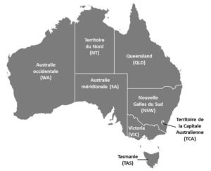

À peine remise des incendies de fin 2019 – début 2020 qui avaient durement affecté le pays en faisant trente-trois morts et des milliers de déplacés et en ravageant plus de 12,6 millions d’hectares[1], l’Australie fait aujourd’hui face à la pandémie de COVID-19. Avec 6 825 personnes infectées et 95 morts au 4 mai 2020, le pays semble moins durement touché qu’un bon nombre d’États, pouvant ainsi laisser penser que l’épidémie a été bien gérée et contenue.
Même si la gestion australienne de la crise a été moins médiatisée que celle de la Nouvelle-Zélande ou de la Corée du Sud, elle reste, à ce stade, considérée comme un succès[2]. Il peut être ainsi particulièrement instructif d’étudier l’évolution de l’épidémie dans ce pays et d’analyser les facteurs qui ont conduit à cette réussite.
Cet article débutera par une mise en perspective de la pandémie actuelle par rapport à d’autres crises sanitaires auxquelles l’Australie a historiquement été confrontée. Il retracera ensuite les principales étapes de la crise dans ce pays en s’intéressant aux dates clés, aux mesures prises par le gouvernement et aux facteurs d’échec ou de succès de la stratégie australienne. Il se focalisera enfin sur les conséquences de la crise, non seulement à court terme mais aussi en envisageant les difficultés et opportunités qu’elle engendrera pour l’Australie dans un temps plus long.
